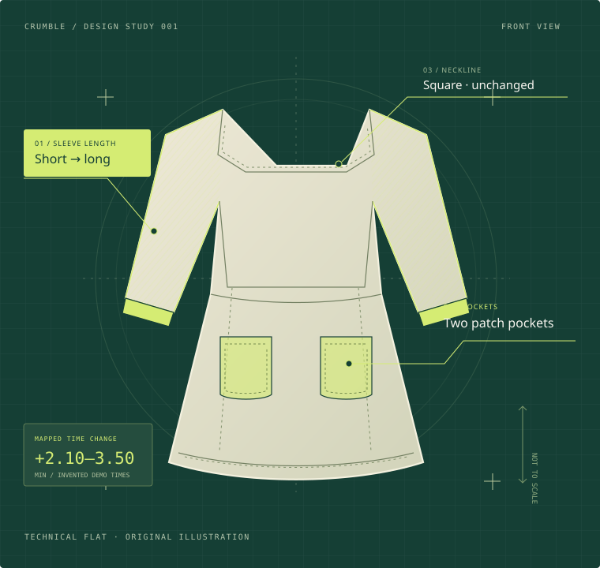

A collection
with context.
Bring in your product records and multiple image views. Keep source details, image rights and immutable evidence snapshots together.
garment-001
front.jpg ↗back.jpg ↗PHOTO + SOURCE + STRUCTUREFROM DESIGN TO DECISION
A garment is more than its silhouette.
Find related designs. Compare their parts.
See what a change could mean to make.
Open source. Your garments. Your judgement.

THE SPACE BETWEEN LOOKING & KNOWING
Two garments can look alike and require different work. Crumble connects visual discovery to construction details, reviewable evidence and your operation time library.
Bring in your product records and multiple image views. Keep source details, image rights and immutable evidence snapshots together.
Search by photo or description with the fashion encoder. Compare parts side by side and distinguish verified details from uncertain proposals.
Record your judgement. Map confirmed changes to supplied standard operation times, then review the range and anything still unresolved.
A SMALL CHANGE. A DIFFERENT PROCESS.
Standard Minute Value (SMV) describes the standard time for an operation under defined conditions. Crumble suggests how mapped operation time changes when the design changes.
Factory methods, fabrics, machinery and unseen construction matter. Your time studies supply the standards.
Change the design yourselfInvented demo times. An illustrative mapped delta, not a total garment SMV or factory estimate.
ONE CONNECTED WORKSPACE
From an image on disk to a decision someone can inspect.
See how it fits togetherCSV / JSONL · local photos · multiple views
Content-addressed images · resumable jobs · versioned vectors
FashionSigLIP · photo / text search · visible parts
Part changes · operation deltas · reviewer decisions · export
CONFIDENCE STARTS WITH CLARITY
OPEN SOURCE / APACHE-2.0
Run the application locally. Inspect the code. Bring your own garment collection, model setup and operation library.
Build with Crumble# In your project folder
powershell -ExecutionPolicy Bypass
-File .\scripts\dev.ps1START WITH A DIFFERENT KIND OF LOOK.